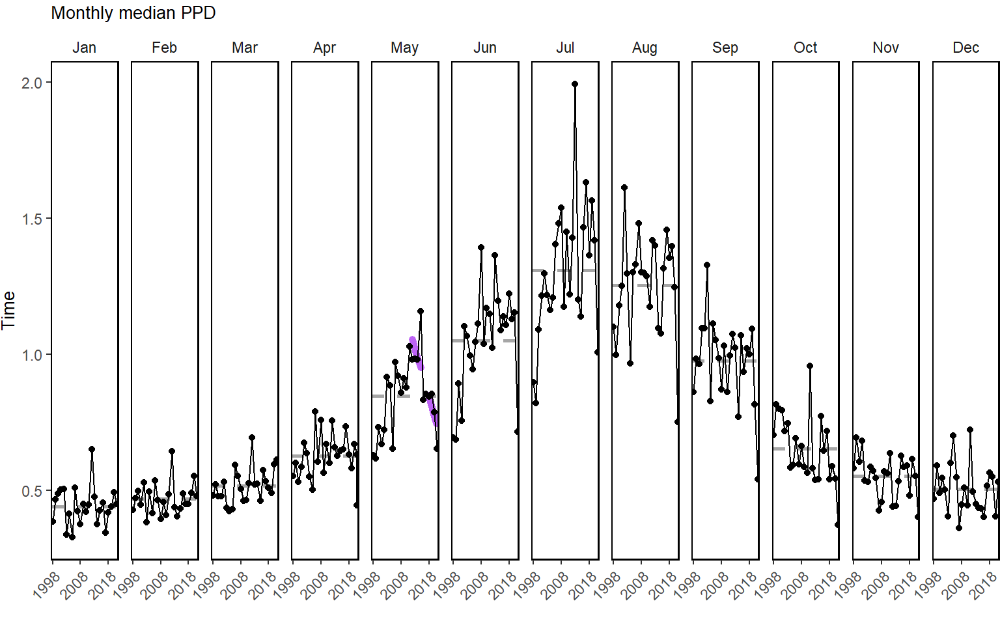
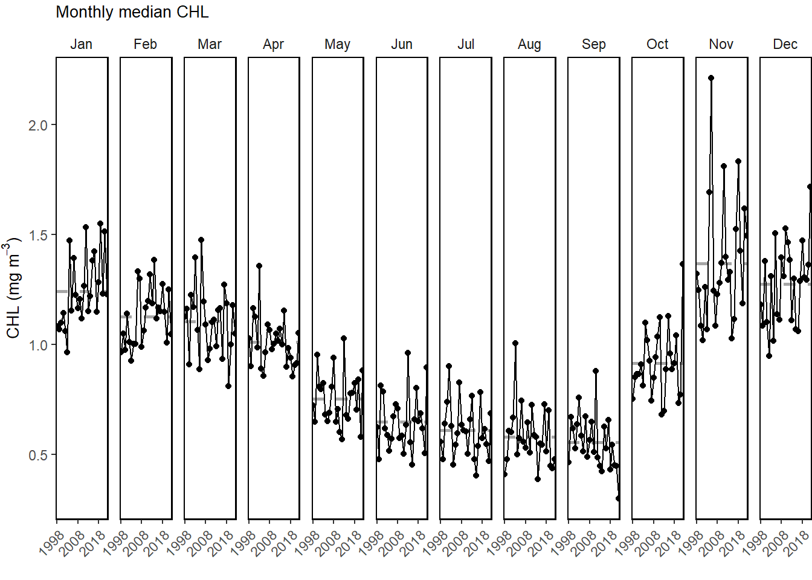
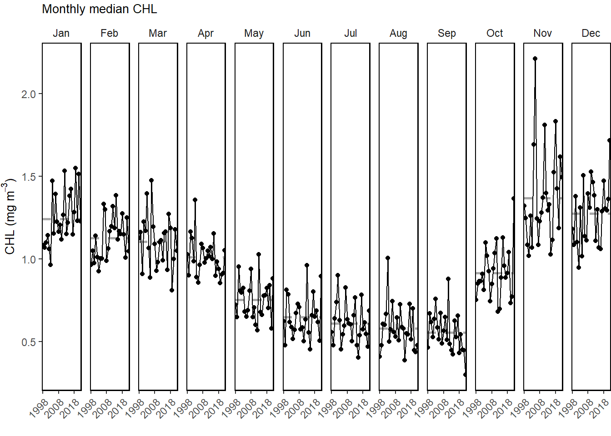
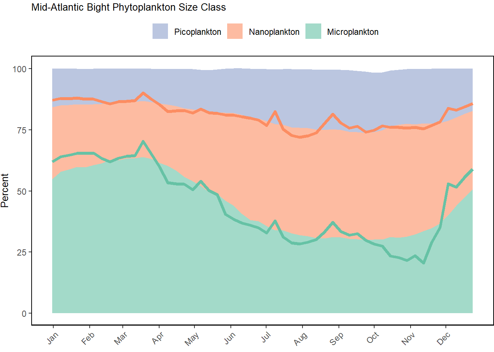
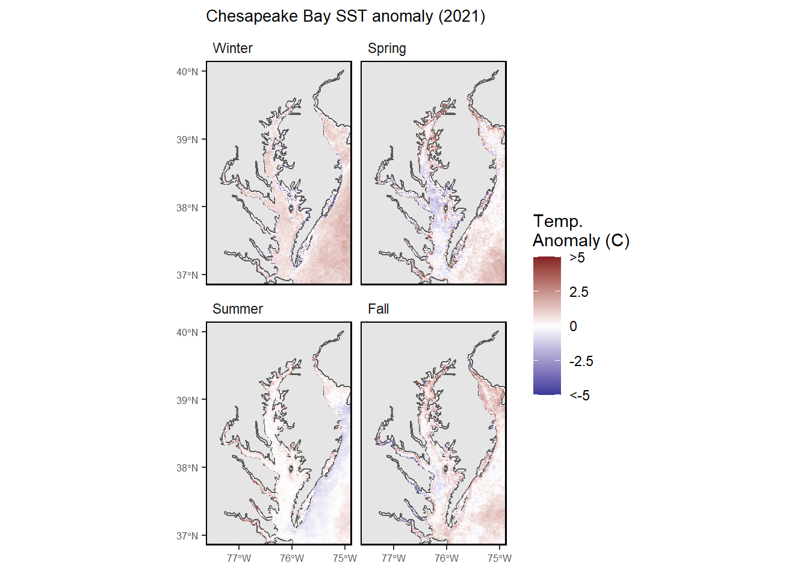
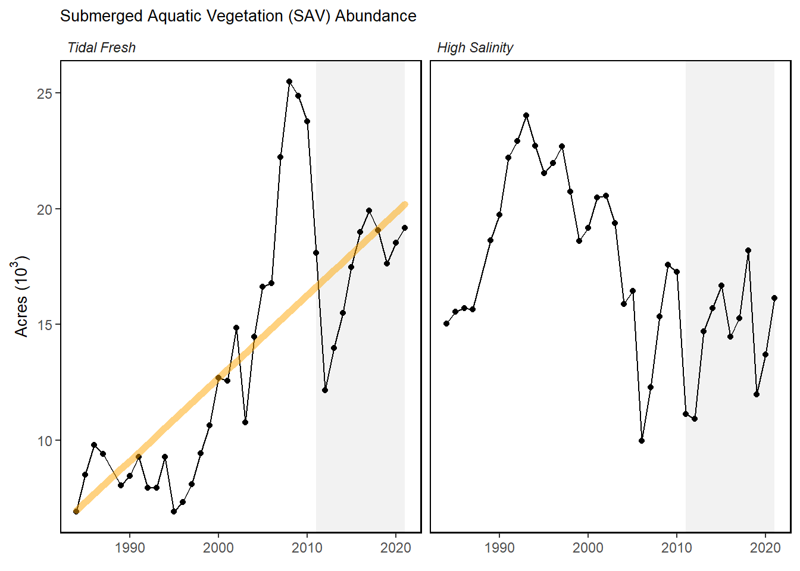
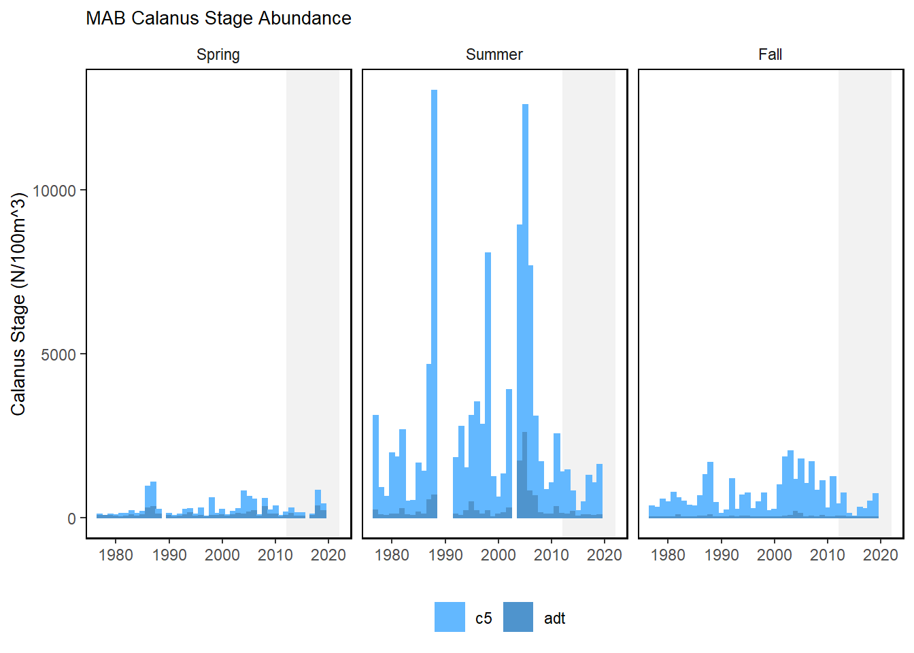
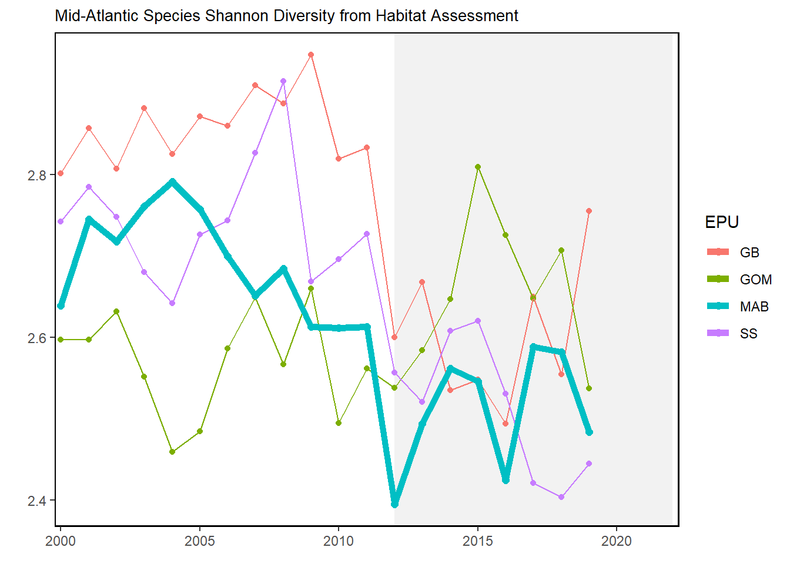
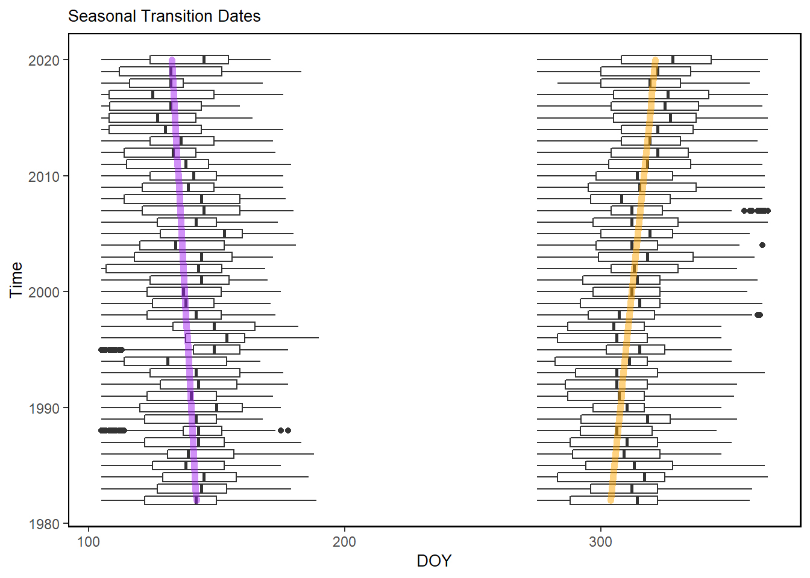

Primary production

Monthly primary production trends show the annual cycle (i.e. the peak during the summer months) and the changes over time for each month.

Trend lines are shown when slope is significantly different from 0 at the p < 0.05 level. An orange line signifies an overall positive trend, and purple signifies a negative trend. Note that in the final report we will only test for trend when N >= 30. However, I have relaxed that requirement for the purposes of this document so that trends are highlighted when N >= 20. This means that some trends shown here will not be present in the final document. Dashed lines represent mean values of time series unless the indicator is an anomaly, in which case the dashed line is equal to 0. Shaded regions indicate the past ten years. If there are no new data for 2018, the shaded region will still cover this time period.
MAB-seasonal sea surface temperature time series overlaid onto 2022 seasonal spatial anomalies.
Annual sea surface transition dates

Annual number of days between spring and fall transition dates
MAB-seasonal Bottom Temperature time series overlaid onto 2022 seasonal spatial anomalies.


Annual bottom temperature in the Mid-Atlantic Bight. (black = Paula’s, red = GLORYS)
Monthly primary production trends show the annual cycle (i.e. the peak during the summer months) and the changes over time for each month.

Weekly chlorophyll concentrations and primary productivity in the Mid-Atlantic are shown for by the colored line for 2021. The long-term mean is shown in black and shading indicates +/- 1 sample SD.

Water quality attainment in Chesapeake Bay following rolling three year assessment periods.
Red = 2022, blue = Long term avergae 2010-2020.

Red = 2022, blue = Long term avergae 2010-2020.




Abundance of cnidarians and euphausiids in Mid-Atlantic Bight.

Abundance Annomalies of pseudocalanus and pteropods in Mid-Atlantic Bight.
Large (red) and small-bodied (blue) copepod abundance in the Mid-Atlantic Bight.
Zooplankton diversity in the Mid-Atlantic Bight.
NO NEW DATA

Wind Counts = Gale wind >34kt, Wave Hight Counts = >5m)
Marine heatwave events (red) in the Mid-Atlantic occuring in 2022.
Marine heatwave events (red) in the Mid-Atlantic occuring in 2022.
Marine heatwave cumulative intesity (left) and maximum intensity (right) in the Mid-Atlantic Bight.
Marine heatwave cumulative intesity (left) and maximum intensity (right) in the Mid-Atlantic Bight.
Marine heatwave events (red) in the Mid-Atlantic occuring in 2022.
Bottom heatwave cumulative intesity (left) and maximum intensity (right) in the Mid-Atlantic Bight.
Data of 55 Commonly Sampled Species.

New Literature Available - Blue Mussels - Atlantic Surfclam - Energy budget modelling - Atlantic surfclam - Larva in Long Island Sound - Black Sea Bass - Atlantic Sea Scallop
Report text here for MA and NE reports
![Left panel: Bottom aragonite saturation state (OArag; summer only: June-August) on the U.S. Northeast Shelf plotted from available quality-controlled vessel- and glider-based datasets from 2007-present. Right top panel: Map depicting locations where summer bottom OArag in the habitat depth range reached or were lower than the laboratory-derived sensitivity level for Atlantic sea scallop (Placopecten magellanicus). The sensitivity value used for Atlantic sea scallop was OArag = 1.1, based on reduced adult calcification rate observed at this level in Cameron et al. (2022). Right bottom panel: Map depicting locations where summer bottom OArag in the habitat depth range reached or were lower than the laboratory-derived sensitivity level for longfin squid (Doryteuthis pealeii). The sensitivity value used for longfin squid was OArag = 0.96, based on embryo and paralarvae malformation, increased time to hatching and decreased hatching success, and changes to mantle length and statolith morphology observed at this level in Zafroff et al. (2019) and Zafroff & Mooney (2020). Gray circles in right top and bottom panels indicate locations where carbonate chemistry samples were collected, but bottom OArag values were higher than sensitivity values determined for that species.](images/Saba_Fig_SOE_MAFMC%20-%20Grace%20Saba.jpg)
Left panel: Bottom aragonite saturation state (OArag; summer only: June-August) on the U.S. Northeast Shelf plotted from available quality-controlled vessel- and glider-based datasets from 2007-present. Right top panel: Map depicting locations where summer bottom OArag in the habitat depth range reached or were lower than the laboratory-derived sensitivity level for Atlantic sea scallop (Placopecten magellanicus). The sensitivity value used for Atlantic sea scallop was OArag = 1.1, based on reduced adult calcification rate observed at this level in Cameron et al. (2022). Right bottom panel: Map depicting locations where summer bottom OArag in the habitat depth range reached or were lower than the laboratory-derived sensitivity level for longfin squid (Doryteuthis pealeii). The sensitivity value used for longfin squid was OArag = 0.96, based on embryo and paralarvae malformation, increased time to hatching and decreased hatching success, and changes to mantle length and statolith morphology observed at this level in Zafroff et al. (2019) and Zafroff & Mooney (2020). Gray circles in right top and bottom panels indicate locations where carbonate chemistry samples were collected, but bottom OArag values were higher than sensitivity values determined for that species.
Seasonal sea surface temperature anomalies for 2022 over the Northeast US Shelf.
Average annual sea surface temperature (SST) over the Northeast US Shelf.
Index representing the north wall of the Gulf Stream. Positive values represent a more northerly Gulf Stream position.
Index representing the north wall of the Gulf Stream. Positive values represent a more northerly Gulf Stream position.
Warm core ring formation on the Northeast US shelf.

